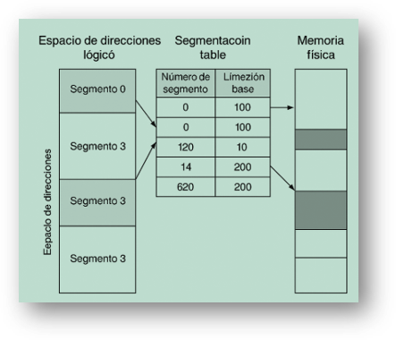

Es una forma de administrar la memoria en la que cada programa se divide en partes llamadas segmentos, que pueden tener distintos tamaños y representan elementos como el código, los datos, la pila o las tablas.
Estos segmentos se cargan en la memoria principal solo cuando se necesitan y pueden aumentar o disminuir de tamaño de manera independiente.
A diferencia de la paginación, aquí no se usan divisiones fijas, sino que la memoria se organiza según la estructura lógica del programa (Silberschatz, Galvin y Gagne, 2022).
En este modelo, el espacio de direcciones de un proceso está formado por varios segmentos, y cada dirección se compone de un número de segmento y un desplazamiento, que indica la posición dentro de él.
El sistema operativo mantiene una tabla donde se guarda la dirección inicial y el tamaño de cada segmento, lo que permite controlar el acceso y evitar errores.
Esta técnica ofrece una gestión flexible y modular de la memoria, útil para sistemas que requieren protección y compartición de datos, aunque su manejo es más complejo que el de la paginación.
Figura 25
Segmentación pura
Nota: Adaptado de Conceptos de sistemas operativos (10.ª ed.) por A. Silberschatz, P. B. Galvin y G. Gagne, 2022; Wiley, 2022.